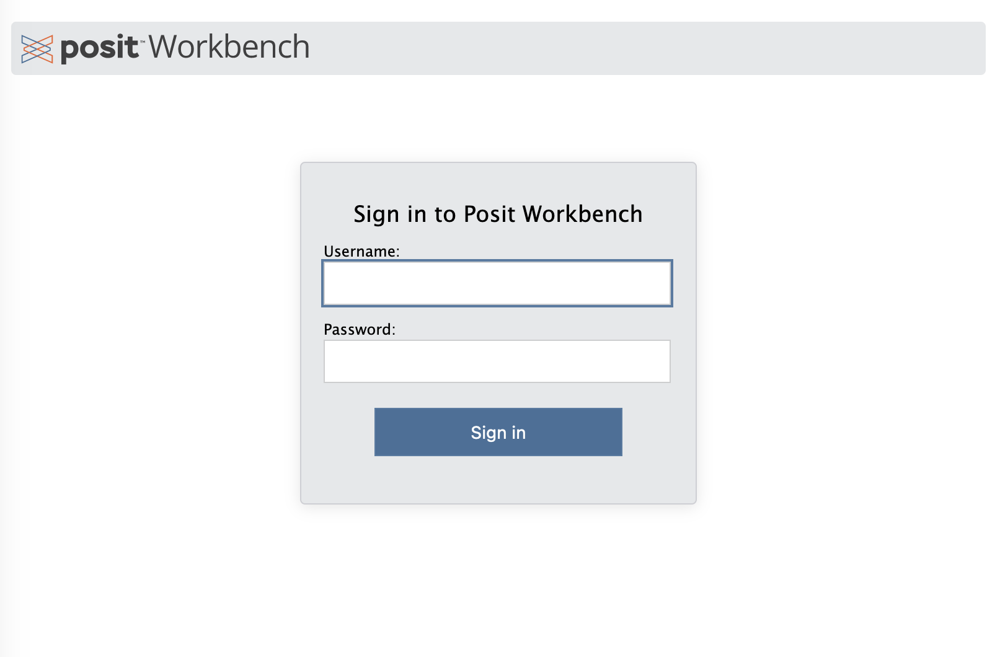
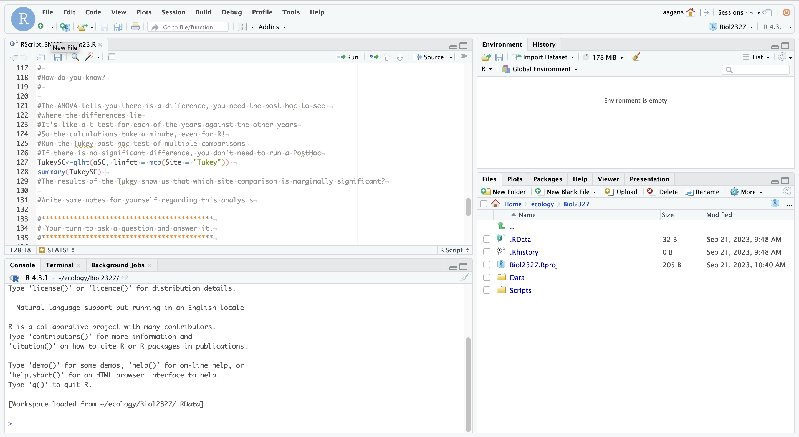
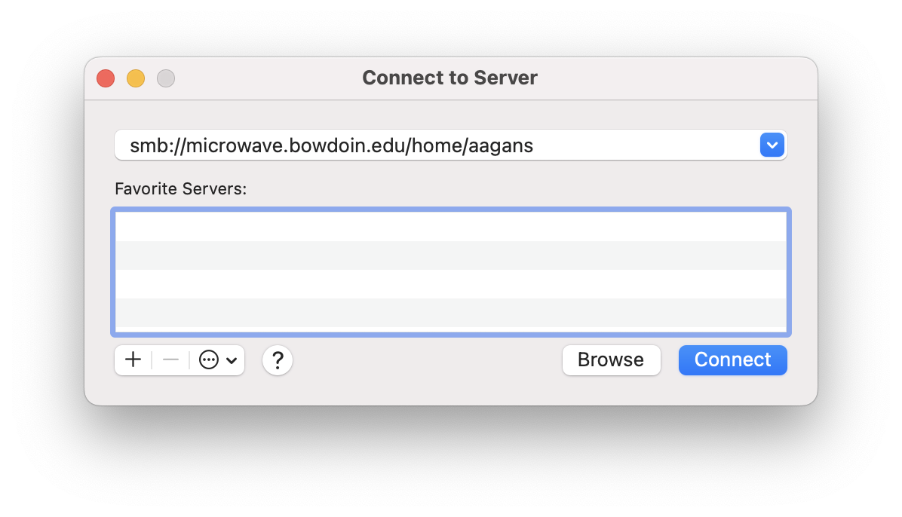

Using R and RStudio
Accessing R at Bowdoin
Traditionally, R is installed to your local computer, allowing you to use it wherever and whenever you want to. However, here at Bowdoin, IT hosts an RStudio server on the High Performance Computing cluster. This allows you to not bog down your computer if you are running long, complex code, and it makes sure everyone has the same R environment when used in lab. The server is accessible from rstudio.bowdoin.edu as long as you are either connected to the Bowdoin internet network or to the Bowdoin VPN. Once there, you will be asked to sign in with your Bowdoin username and password. Make sure you use your Bowdoin username, and not your email! For example, if your email is ssdeeds@bowdoin.edu, then your username is ssdeeds.

Once you are logged in, you will now see the RStudio interface. This is where you can start using R!
RStudio Interface
RStudio is a type of software called an IDE (Integrated Developer Environment) that makes using R much easier than using R directly.

The interface is split into 4 sections by default.
The top left is where files are open and accessible. Generally, this is where you are creating an R script, which is essentially a text file with a list of R commands that are saved so you can use them later. You can run R code directly from the script through two main methods. If you highlight multiple rows of R code or click so your cursor is on one row and click the run button with the green arrow, then R will run the selected line(s) of code and the output will show up in the console (discussed below). If you want to run the whole file, you can use the Source button.
The bottom left is the R console, where R itself lives. You can type commands for R to process into this screen and when entered, R will process them. However, commands entered here are not saved, so making an R script is recommended. This is also where any output from R scripts will appear. A handy feature is if you hit the up arrow on your keyboard, the last command run will appear in the console, allowing for it to be run again. This can be repeated multiple times to more easily run a command you previously used
The top right is the environment window. When you import datasets into R or create variables to store information, they will show up here.
The bottom right is the information window, where you can access the File, Plots, Packages, and Help tabs. File allows you to access files in your directory for use in RStudio. Plots is where graphs you make will appear. Packages is where the add-on packages you can install and load will appear, and help is a manual for R commands that is easily accessible.
Files Location
Files that the RStudio server uses and can access live in your Bowdoin Microwave storage space. This is 10 gigabytes of storage that Bowdoin hosts on their servers that is automatically backed up on a regular basis. This is where you will want to store your data files and R scripts for ease of use. This storage can be accessed by opening the Finder application and clicking the Go button at the top menu bar. Click the Connect to Server… button, which will open a window that looks like the one below.
To connect to your Microwave drive, put the drive location in the top field. This will be smb://microwave.bowdoin.edu/home/username with the username being your Bowdoin username. Once you click connect, you will be asked to log in with your Bowdoin credentials. Once you submit your username and password, a finder window will open and contain your Microwave drive.